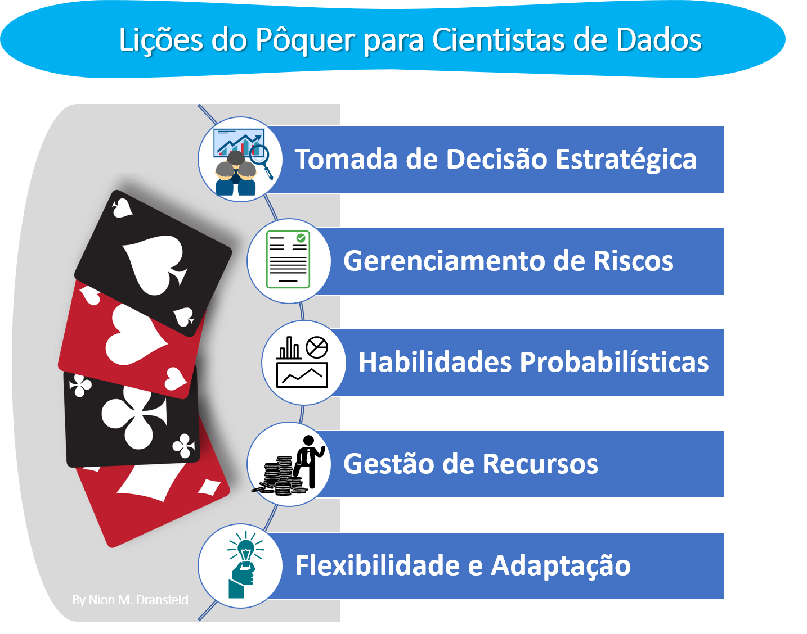

Lições do Pôquer para Cientistas de Dados
Aborda como o pôquer e a ciência de dados se assemelham em análise estratégica, decisão sob incerteza e gerenciamento de riscos.
O pôquer, com suas raízes remontando a vários jogos europeus do século XVIII, evoluiu ao longo dos séculos para se tornar um dos jogos de cartas mais populares e estratégicos do mundo. Sua história é rica e diversificada, refletindo uma mistura de influências culturais e estilos de jogo.

Jogar pôquer pode ser benéfico para compreender a ciência de dados, pois ambos compartilham fundamentos em análise estratégica, tomada de decisão sob incerteza e interpretação de padrões complexos. No pôquer, os jogadores são constantemente desafiados a tomar decisões baseadas em informações incompletas e probabilidades, um exercício que está diretamente ligado ao trabalho de um cientista de dados ao modelar e prever a partir de conjuntos de dados imperfeitos. Além disso, o pôquer aprimora habilidades de gerenciamento de risco e avaliação de variáveis desconhecidas - competências essenciais na construção de modelos de dados robustos e na tomada de decisões baseadas em dados. A natureza dinâmica do pôquer, que exige adaptação rápida a novas informações e situações, reflete o ambiente em constante mudança da ciência de dados, onde os profissionais devem se adaptar a novas tecnologias, algoritmos e insights de dados.
Habilidades Desenvolvidas
Jogar pôquer pode ser uma experiência enriquecedora, não apenas em termos de entretenimento, mas também no desenvolvimento de várias habilidades úteis. Abaixo algumas dessas habilidades:
Análise e Tomada de Decisão Estratégica: Pôquer é um jogo de estratégia e decisão. Os jogadores devem avaliar constantemente suas mãos, as ações dos adversários e as probabilidades para tomar decisões informadas.
Gerenciamento de Riscos e Controle de Impulsos: No pôquer, é crucial saber quando apostar, aumentar ou desistir. Isso requer uma avaliação cuidadosa do risco e a habilidade de controlar impulsos, evitando decisões precipitadas.
Habilidades Matemáticas e Probabilísticas: Jogar pôquer melhora a capacidade de cálculo rápido, especialmente em relação a probabilidades e pot odds (razão entre o tamanho do pote e o valor da aposta).
Leitura de Pessoas e Compreensão de Psicologia: Um aspecto importante do pôquer é a habilidade de ler os outros jogadores, compreender suas estratégias e intenções, e antecipar seus movimentos.
Paciência e Disciplina: O pôquer exige paciência, pois nem todas as mãos são jogáveis, e a disciplina para manter uma estratégia consistente, mesmo em situações adversas.
Gestão de Recursos (Bankroll Management): Os jogadores aprendem a gerenciar seu dinheiro de forma eficaz, tomando decisões sobre quanto apostar e quando se afastar de um jogo.
Resiliência e Lidar com a Perda: No pôquer, a perda é uma parte natural do jogo. Aprender a lidar com essas perdas, não se deixar abater e se recuperar para o próximo jogo é uma habilidade valiosa.
Foco e Concentração: Durante um jogo, os jogadores precisam manter um alto nível de foco e concentração, observando as ações dos adversários e mantendo-se atentos às mudanças no jogo.
Habilidades Sociais e Comunicação: Jogar pôquer, especialmente em ambientes físicos, promove a interação social e o desenvolvimento de habilidades de comunicação, à medida que os jogadores interagem uns com os outros.
Flexibilidade e Adaptação: No pôquer, as situações mudam rapidamente, exigindo dos jogadores a capacidade de se adaptar a novas informações e condições de jogo.
Conclusão
Portanto, além de ser uma forma de entretenimento, o pôquer pode ser uma ferramenta eficaz para desenvolver uma variedade de habilidades cognitivas e sociais. Ao integrar as habilidades desenvolvidas no pôquer, os aprendizes e praticantes de Ciência de dados podem ganhar uma perspectiva valiosa sobre como navegar na incerteza, interpretar dados complexos e tomar decisões estratégicas.
Explore Mais e Colabore
Se você se interessou pelas relações entre o pôquer e ciência de dados e gostaria de ver esses conceitos em ação, convido você a explorar meu projeto no Github e Shiny na qual consiste a simulação de jogos e uma análise detalhada das probabilidades envolvidas, sendo útil tanto para os jogadores iniciantes quanto para os mais experientes interessados em refinar suas estratégias.
Projeto no GitHub: Visite https://github.com/nionmaron/Poker-Probability para ter acesso ao código-fonte, entender mais sobre o desenvolvimento do projeto e, se desejar, contribuir para sua evolução.
Aplicativo Shiny de probabilidades do Poker (desktop): Para uma experiência prática do projeto, acesse o aplicativo diretamente através de https://nionmaron.shinyapps.io/poker_app_shiny/. Aqui, você pode testar jogos de pôquer na modalidade Texas Hold’em e ver as análises de probabilidades ao longo da sequência de cartas (Pre-Flop ➔ Flop ➔ Turn ➔ River). Sua experiência com o app e qualquer feedback será valioso para futuras melhorias.
#DataDrivenPoker #PokerAnalytics #StrategicData #StatisticalPoker